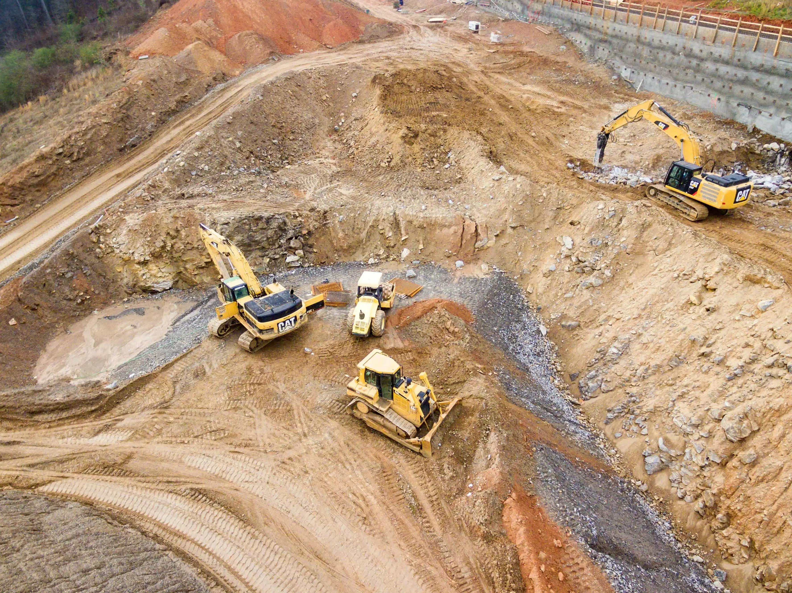

Projects Delivered
Ludhiyana-Ladhowal
Enhancing Connectivity in Ludhiana
The Laddowal Bypass project in Ludhiana, Punjab, spans 17.041 km, enhancing connectivity between NH-95 and NH-1 via the Laddowal Seed Farm. Developed under the Hybrid Annuity Model, it improves traffic flow and infrastructure.

Trichy-Madurai Highway
Ensuring Smooth Connectivity & Road Safety on NH-45B
The operation and maintenance of the Trichy Bypass to Tovaramkurchi-Madurai section of NH-45B focus on enhancing road quality, safety, and traffic efficiency. Managed under the OMT (Operate, Maintain, Transfer) model, this project ensures seamless travel and long-term infrastructure sustainability.
Lokmanya Tilak Terminus
Revamping LTT: A Gateway to Modern Travel
The project involves the construction of a new station building complex and ancillary civil works at Lokmanya Tilak Terminus (LTT), Kurla. Aimed at improving passenger facilities and operational efficiency, this development will enhance connectivity and provide a better travel experience.

Vitva BhusavalKhamgaon Road SH-44 Upgrade
Transforming Regional Connectivity Across Maharashtra
This project reflects Eagle Infras deep-rooted commitment to enhancing interstate transport infrastructure. The SH-44 road upgrade connects vital trade and agricultural belts, enabling safer, faster travel. With technical expertise in highway strengthening and drainage planning, our team ensures long-lasting road performance that supports both economic and regional development goals.
Khamgaon Bypass Highway
Decongesting Urban Roads Through Strategic Highway Design
Designed to reduce inner-city traffic pressure, the Khamgaon Bypass is a prime example of our expertise in traffic flow engineering. Eagle Infra applied modern road planning standards and materials to ensure durability and safety. The project strengthens Eagle's reputation for building smart bypass routes that balance ecology, safety, and urban planning.
Trichy–Madurai Highway Expansion
Seamless Travel Across Tamil Nadu's Industrial Heartland
A vital corridor between southern Tamil Nadu cities, this highway expansion improves freight and commuter movement drastically. With precision in road geometry, terrain handling, and safety integration, Eagle Infras experienced engineers deliver a road that meets NHAI benchmarks while reflecting our commitment to national logistics infrastructure.
Raipur Central Park Development
Creating Public Spaces That Elevate Urban Living
Blending civil engineering with sustainable landscaping, this project highlights Eagle Infras versatility beyond roads. Raipur Central Park is a showcase of modern urban design, featuring pathways, water features, and public utilities. Our experience in civic planning ensures the park is safe, accessible, and built to serve generations.
.webp)
Pathan Road, Aurangabad
Strengthening Last-Mile Road Access in Urban Pockets
Pathan Road is an example of high-precision urban roadwork by Eagle Infra, executed in a densely populated area. The project involved upgrading drainage, road base layers, and surface durability. Our team applied decades of practical knowledge to ensure minimal disruption and long-term quality amidst complex site conditions.
LTT Station Building Complex
Elevating Passenger Infrastructure at Mumbai's Key Terminal
Eagle Infra proudly contributed to the modernization of Lokmanya Tilak Terminus by delivering a structurally sound, commuter-friendly building complex. Incorporating architectural planning, fire safety norms, and utility integration, the project reflects our ability to handle high-footfall infrastructure with precision and public accountability.
Four-Laning SH-24 to SH-198 Corridor
Widening Roads for Future Traffic and Freight Demands
The four-laning of this crucial corridor ensures smoother inter-district travel and freight movement. With expert pavement design, stormwater planning, and traffic safety features, Eagle Infra delivers on state-level mandates while maintaining construction quality and environmental compliance standards that stand the test of time.
Projects Ongoing
Project Ludhiyana
A Major Step in Punjabs Urban Infrastructure Expansion
Eagle Infra's Ludhiyana Project enhances regional mobility through advanced road planning and timely execution. With deep experience in urban construction, our team ensures this development addresses both traffic decongestion and long-term sustainability. The project reflects our commitment to structured growth in one of North India's fastest-developing zones.
Project Lokmanya Tilak Terminus
Redefining Multimodal Connectivity in Mumbai
This project enhances commuter experience and streamlines passenger flow at one of Mumbais busiest rail hubs. Eagle Infra's team integrated advanced civil and utility design to improve connectivity, safety, and station capacity. The LTT upgrade exemplifies our expertise in high-pressure urban transport infrastructure development.
Trichy Madurai Highway
Boosting Economic Corridors in Tamil Nadu
Eagle Infra delivers a reliable and future-ready road between Trichy and Madurai—an essential route for trade and travel. With extensive highway construction expertise, we ensured durable surface quality, proper drainage, and safety features. The project stands as a model of efficiency and technical competence.
NH-6 AmravatiChikli Section
Strengthening a Vital Stretch of National Highway 6
This section of NH-6 forms a core link for industrial freight and regional movement. Our team used high-grade materials and traffic-centric design to ensure uninterrupted operations during and after construction. It reinforces Eagle Infras role as a trusted name in national highway execution and management.
Sewage Facilities Bhivandi Nizampur City
Modernizing Civic Utilities Through Smart Infrastructure
With rising urban population in BhivandiNizampur, Eagle Infra delivered a comprehensive sewage system to manage waste efficiently. Engineered with long-term maintenance in mind, this project reflects our expertise in underground utilities, water flow design, and environmental safety compliance in urban zones.
Four-Laning Parshuram Ghat
Safe Mountain Pass Access with Smart Road Expansion
Parshuram Ghat's four-laning required a precise balance of geography, safety, and engineering. Our experienced hill-road team executed with specialized retaining, drainage, and slope safety solutions. This project demonstrates Eagle Infras expertise in difficult terrain roadworks with dependable results.
Water Supply Facilities – Shelgaon
Delivering Safe Drinking Water Through Smart Distribution Design
Eagle Infra developed water supply lines and filtration systems to serve the residents of Shelgaon with clean and consistent water access. With a focus on quality materials, flow optimization, and contamination control, the project reflects our dedication to rural infrastructure and public well-being.
Water Supply Facilities – Sangli
Empowering Urban Health Through Clean Water Access
This project involved laying high-capacity pipelines and integrated storage units to meet Sanglis growing water demand. Eagle Infra ensured precision in execution and tested all systems for flow efficiency and water safety. The initiative showcases our commitment to dependable civic infrastructure in expanding cities.
Verticals
National Highway's & State Highways
Public Utility Infrastructure
Urban Metrol Infrastructure
Highway Toll Infrastructure
Eagle Infra India Limited
Eagle Nest, Block no 758, Behind Chopra Court, Gol Maiden Rd, Ulhasnagar, Maharashtra 421003


 Upgradation Project.jpg)

.jpg)